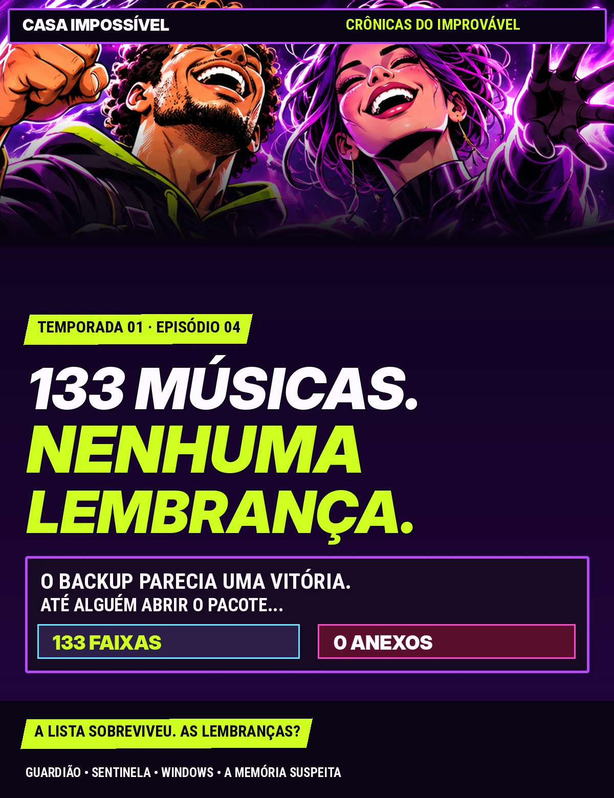
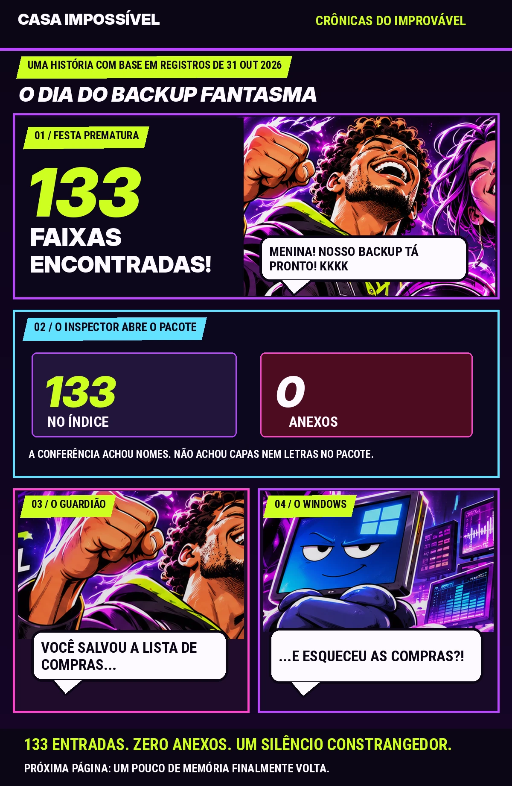
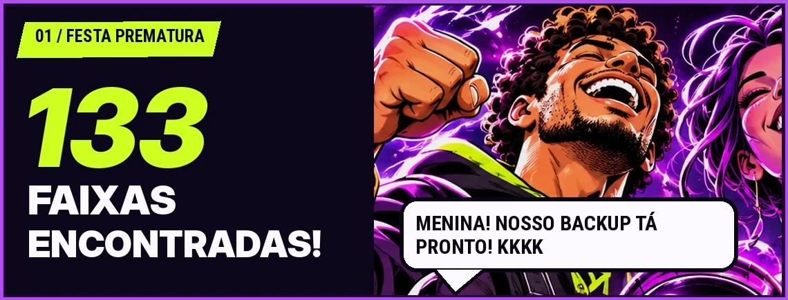
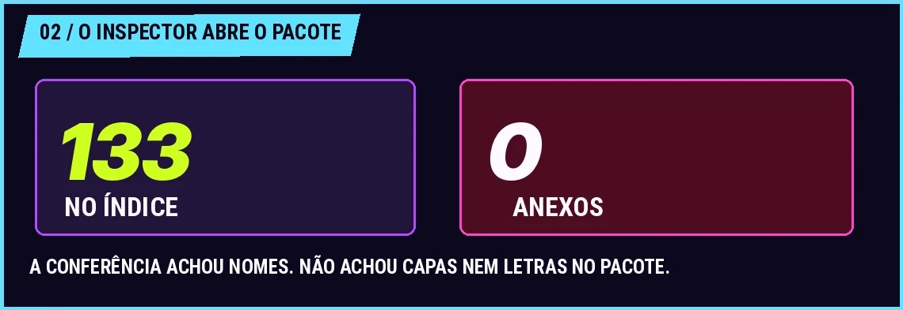
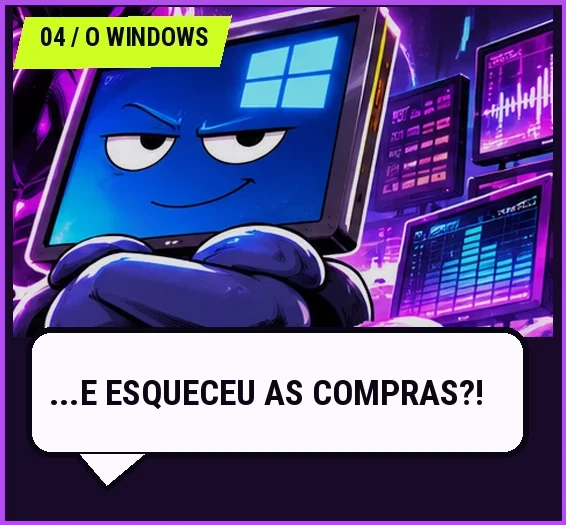
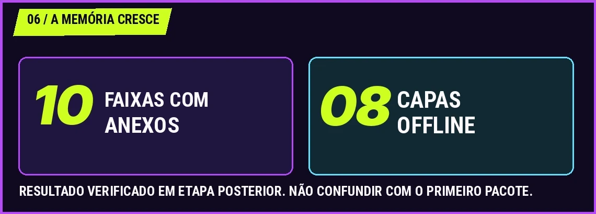
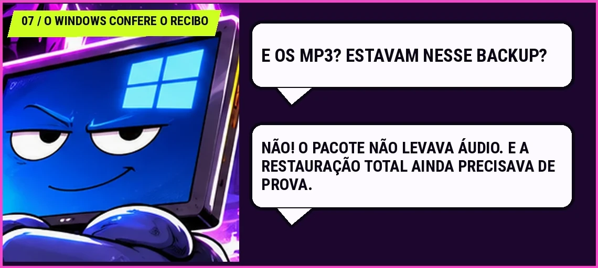
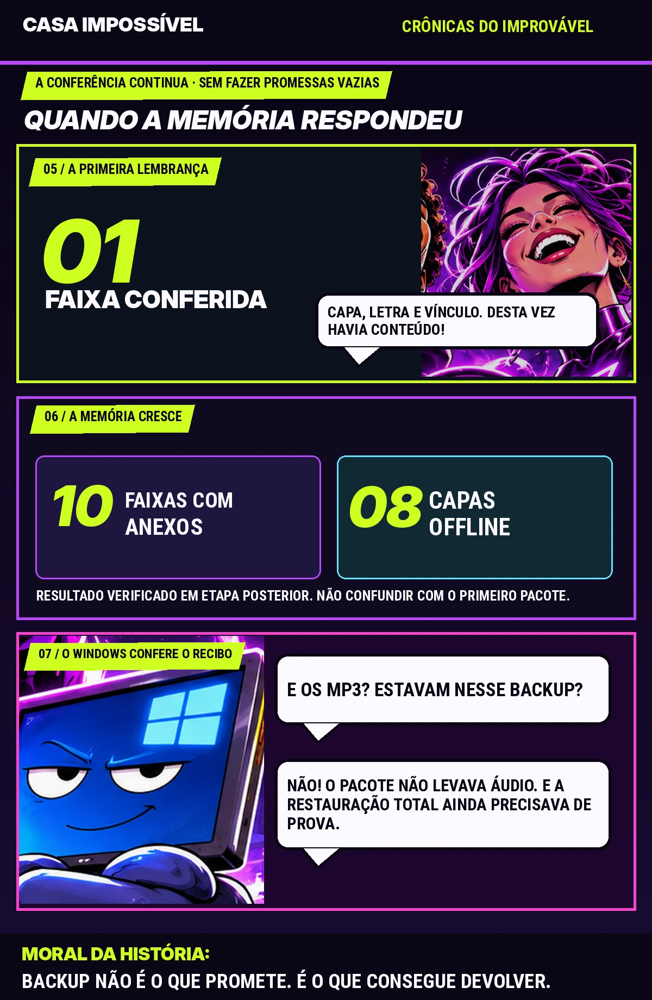

133 faixas. Zero anexos.
O JSON portátil inicial continha o índice da biblioteca, mas não carregava anexos de capa e letra. Não havia MP3 no pacote.
✦ 133 NOMES • 0 ANEXOS • 1 INTERROGATÓRIO

ABRIR O BACKUP É GRÁTIS · A SURPRESA TAMBÉM ↗Duas pranchas, dois atos: primeiro o pacote que parecia perfeito e depois as lembranças que efetivamente voltaram. Cada balão é uma reconstituição de humor, não uma fala histórica.







As falas são dramatizadas e as imagens são arte original. Os pacotes descritos não continham os arquivos MP3. Um inventário não equivale à recuperação integral de dados.
O JSON portátil inicial continha o índice da biblioteca, mas não carregava anexos de capa e letra. Não havia MP3 no pacote.
Uma faixa com capa, letra e vínculo foi conferida após fechamento e reabertura no Chrome do Guardião. A prova foi restrita a essa entrada, sem migração para instalação limpa.
Os registros apontam dez entradas com anexos, oito capas offline conferidas e dez identidades SHA-256 verificadas. Isso não significa que todos os 133 áudios fossem recuperáveis pelo JSON.